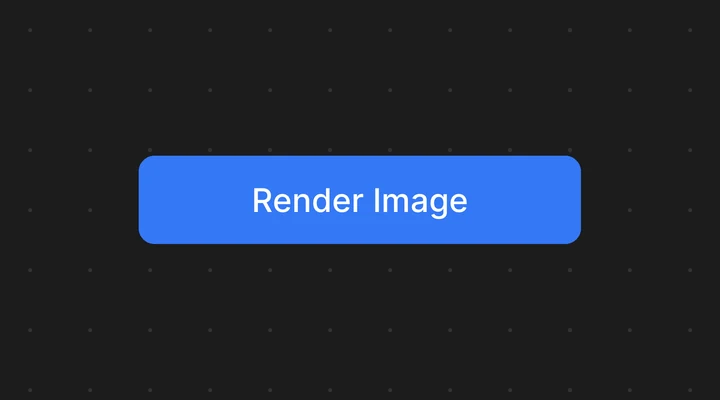
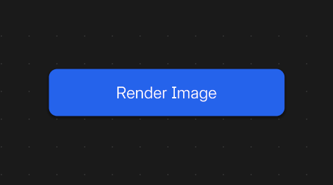
In BlenderOperator
Runs a Blender operator.
Pick Operator from UI: right-click any button in Blender to copy its operator and settings. It turns red when the operator can't run right now.
Buttons that run operators and scripts, switches, sliders and fields that drive any property, colour and brush tools, lists, images, live 3D views and layout widgets. The Armature Picker adds knobs, pads and bone pickers of its own.


In BlenderRuns a Blender operator.
Pick Operator from UI: right-click any button in Blender to copy its operator and settings. It turns red when the operator can't run right now.
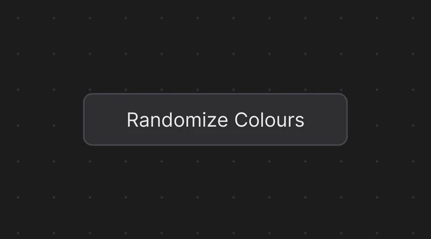
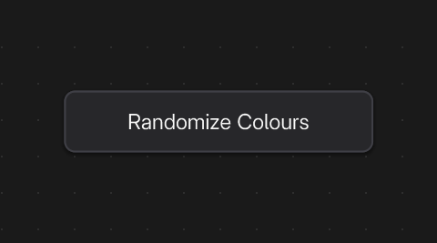
In BlenderRuns your own Python script.
Write it in a Text Editor window. It can use active_object, active_widget and canvas. With Blender's Auto Run Python Scripts off, the first click asks before running it.
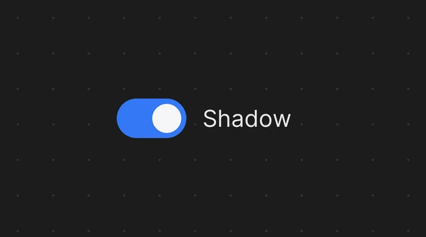
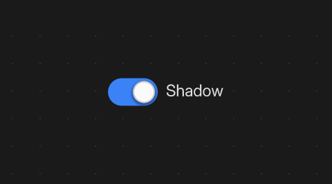
In BlenderSwitches an on / off property, or sets an enum or integer value.
Three looks: Radial, Switch and Checkbox. Put a few Set Value toggles side by side for radio buttons.

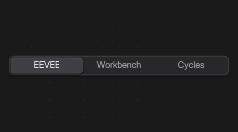
In BlenderPicks one value of an enum or integer.
Segmented, Dropdown, or Auto: segmented with 5 items or less. An integer gets its own list of items.

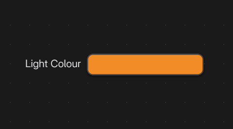
In BlenderShows a colour and opens Blender's colour picker.
A light, the world, a material's Base Color or viewport colour. A colour with alpha shows a checkerboard half.

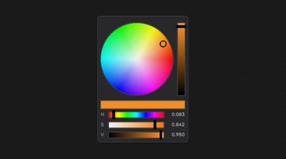
In BlenderEdits a colour right on the canvas.
A Wheel, or a Ring + Square as in Krita or Photoshop, with RGB, HSV and Alpha sliders as you choose.

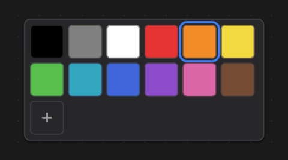
In BlenderA grid of colour swatches: click one to use it.
Its own colours, or a Blender palette, the kind Texture Paint uses. Show Active rings the current colour.

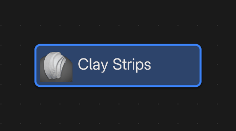
In BlenderMakes one brush the active brush.
The Essentials, your file's brush assets or your own libraries. Icon, name or both. Square and icon-only at Roundness 1, it is a round brush button.

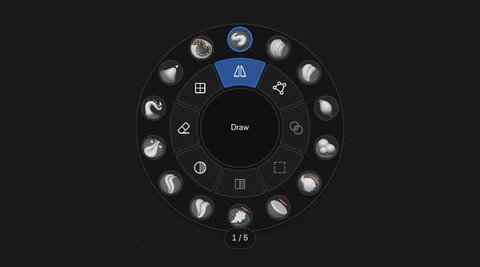
In BlenderBrushes, toggles and operators in a ring, like a sculpt wheel.
Brushes in the outer ring, on as many pages as you need; actions in the inner ring; the name in the core.
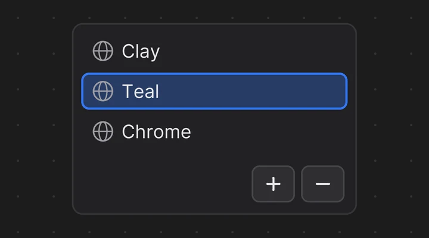
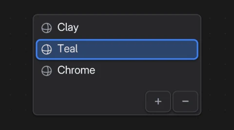
In BlenderShows layers, material slots, vertex groups and other lists as rows you can click.
Grease Pencil layers, UV maps, shape keys, bone collections, view layers, or any list with Custom.

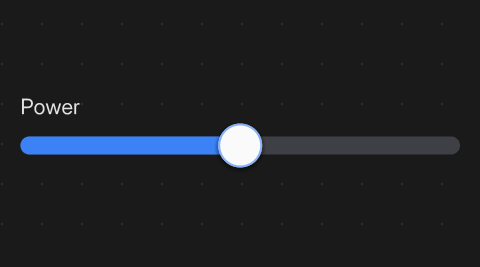
In BlenderDrag along a bar to change a number.
Shift is 10 times finer, Ctrl snaps to the step, Ctrl + click types the value.

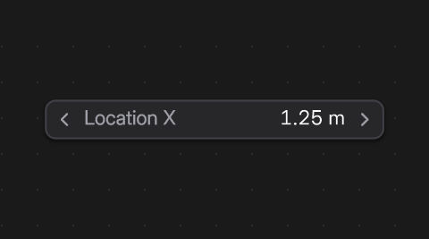
In BlenderA number field like Blender's own.
Drag it, click an arrow, or click to type an expression or a unit (1.5 m, 10/4).
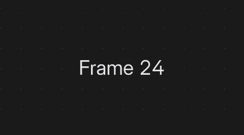
In BlenderText, or a property's value.
Always up to date, with a Format (Number, Percent, Yes / No...), Units, Prefix and Suffix.

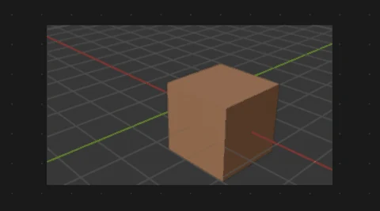
In BlenderShows a picture.
Opacity, Saturation, Brightness and Tint of its own. Backdrop puts it behind every other widget.
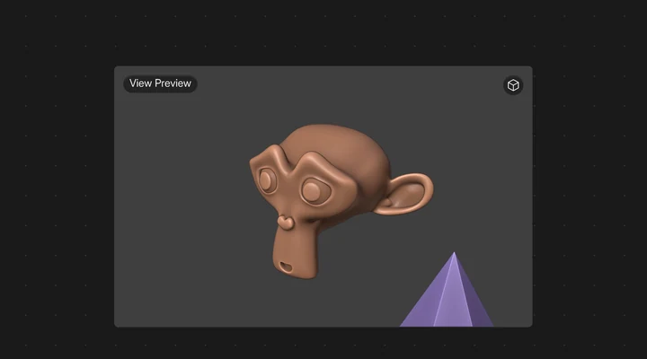
In BlenderA live 3D view that frames the active object.
Or the selected objects, an object or a collection, from any side or at an angle. Auto Frame keeps them framed when they move or change.
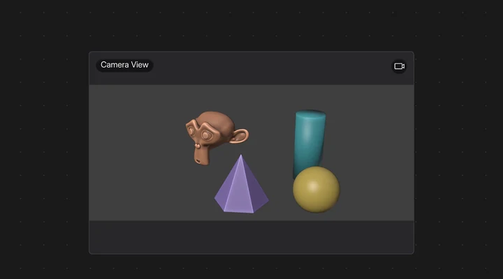
In BlenderWhat the scene camera sees, inside its frame.
Or a camera you pick. The frame keeps the render's aspect ratio; Passepartout darkens what is outside it.
 In Blender
In BlenderFollows a 3D Viewport's view as you navigate.
Free Orbit gives it a view of its own instead, one you can orbit, pan and zoom with the mouse in Live Mode.
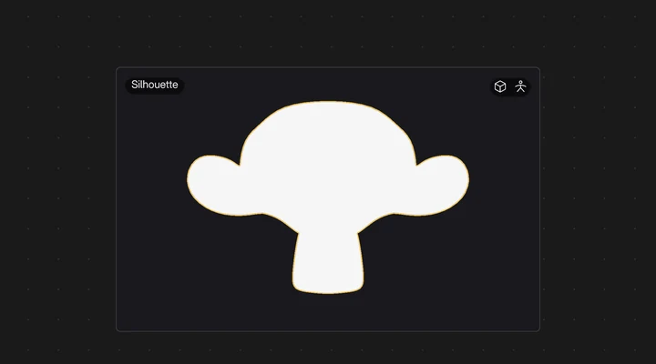
In BlenderThe flat shape of the active object, seen from the front.
One colour, an optional background and an Outer or Inner outline. Target Only draws just the target.

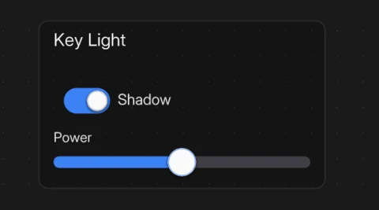
In BlenderA titled area, square or round, that holds and moves other widgets.
Ctrl J frames the selection. Shrink fits it to its contents.
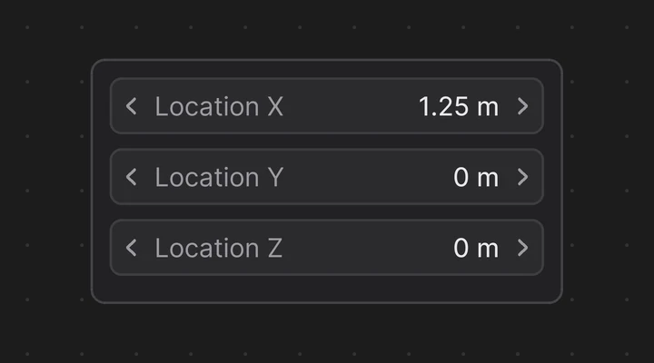
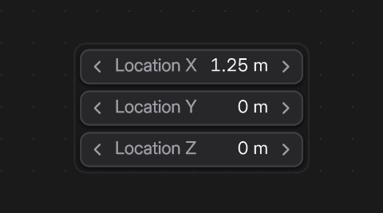
In BlenderLines up other widgets in a row or a column.
Direction, Wrap, Justify, Align, Padding and Gap; Grow, Shrink and Basis per child.

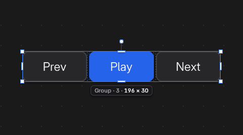
In BlenderMoves and resizes other widgets as one.
Ctrl G groups, double-click works inside it, Alt G ungroups.

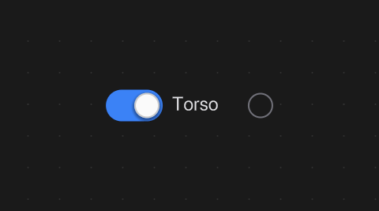
In BlenderShows, hides or solos a bone collection.
Choose Visible or Solo in its Bone Collection panel.

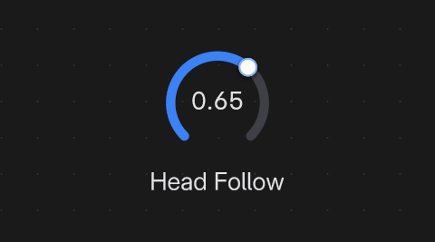
In BlenderA knob you drag to change a number.
Drag right or up to increase. Shift is finer, Ctrl snaps (5 degrees for an angle).

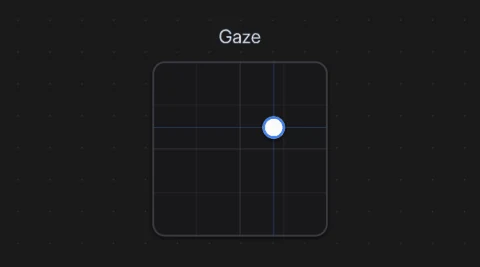
In BlenderA pad that drives two properties at once.
One Data Path per axis, for eyes, jaws or facial controls. Look: Eyes draws it as a gaze control.

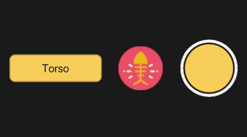
In BlenderBone pickers: select their bone.
A Geometry Shape takes any flat shape. Each can show an IK/FK puck at its edge.
A close-up of the object you are working on, what the camera sees, or a second look at your viewport. It updates as you work. Add > Graphics > 3D Views has four ready-made entries: they are all the same widget, View Preview, set up differently, and you can change any of them later.
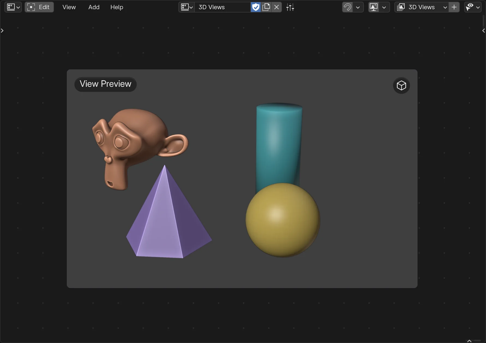
ScreenshotIn Blender
In Edit Mode, Shift A opens the Add Widget panel over the canvas. Just start typing: the best match is selected, and Enter adds it. The new widget follows the mouse; click to place it.
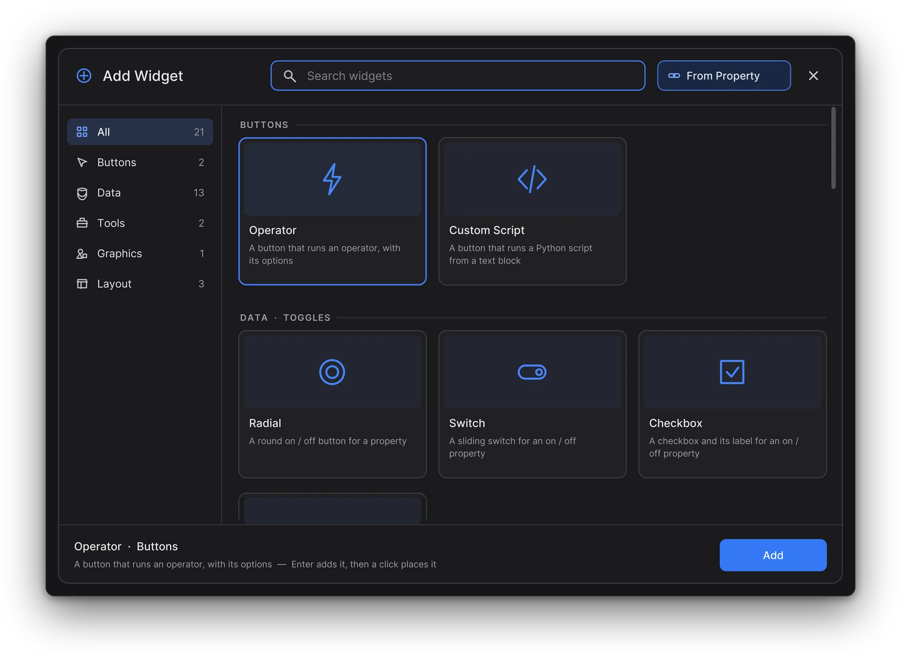
In Blender
 Screenshot
Screenshot
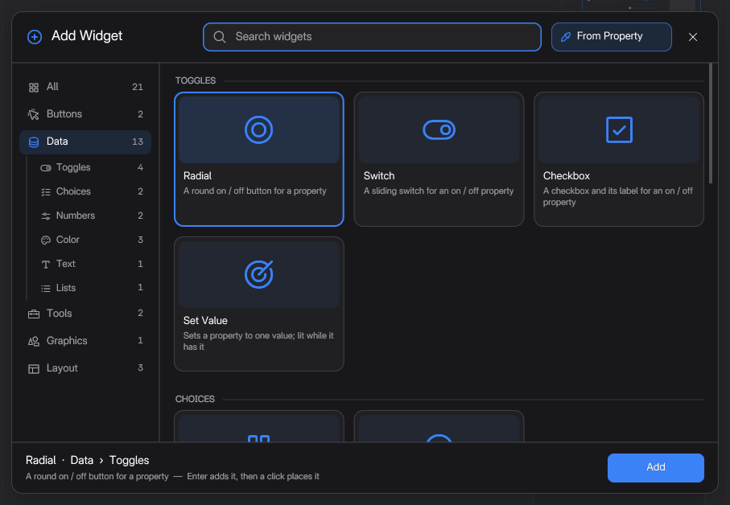
ScreenshotCustom properties work too. Undo removes the whole addition in one step.
| Property | Widget |
|---|---|
| On / off | Toggle (Checkbox) |
| Enum | Enum (Segmented with 5 items or less, else Dropdown) |
| Number | Number Field |
| Factor or Percentage | Lineal slider with that range |
| Colour | Color Swatch |
| Vector | Vertical Flex Box with one Number Field per value |
| Anything else | Label that reads the value out |
In a picker, a vector becomes a Group of Number Fields, because the picker has no Flex Box.
In Blender
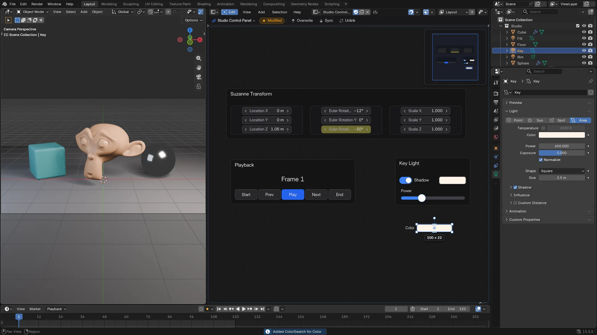
Screenshot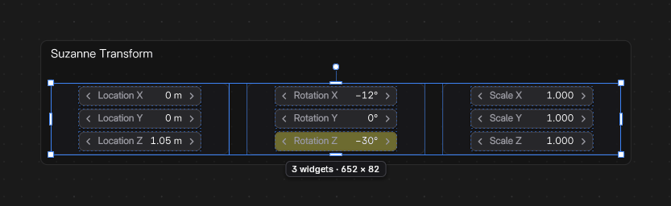
ScreenshotRest the mouse on a widget: an operator's name and description, or the property's name, description and data path. When an operator can't run, it says Can't run here, and why.
A bound widget shows its property's state in Blender's own colours.
Animated Keyframe Driver Changed
I inserts a keyframe, Alt I deletes it, Shift Alt I clears them all, Backspace resets to the default. Auto Keying keys the end of a drag.
Every widget is in the Add menu, ready to bind.